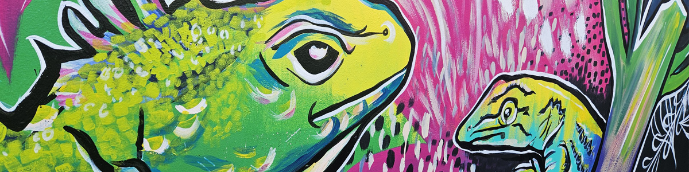
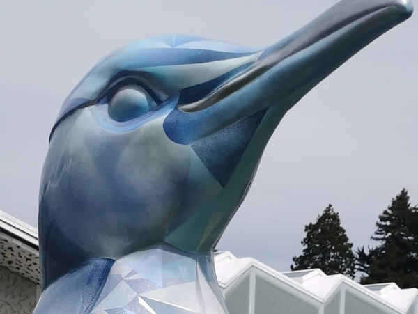

Street work & Art Trails
Public Art

In Our Hands
Rangiora — Carpark

Flowing With Whio
Rangiora — Toilet block

Urban Oasis
Rangiora — Chorus cabinet

Hidden Treasure
Fernside — Chorus cabinet

Tui Song
Rangiora — Chorus cabinet

Woven History
Kaiapoi — Chorus cabinet

Ice
Christchurch — Wild In Art sculpture

Birds of a Feather
Kaiapoi — Wild In Art sculpture

Mammoth Wolley
Kaiapoi — Wild In Art sculpture

Louie Braille
Christchurch — NZ Blind Foundation